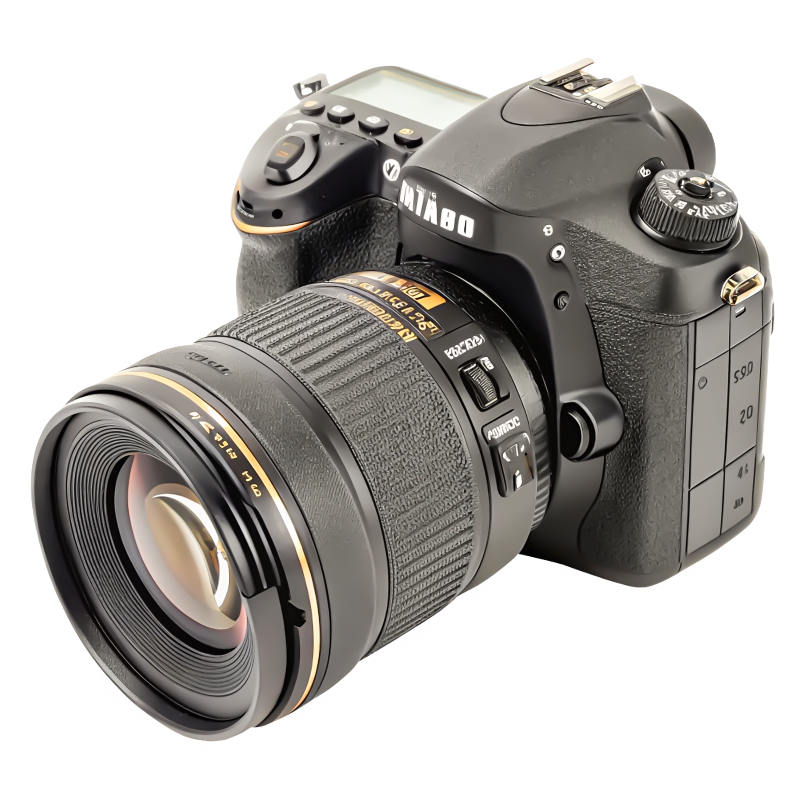
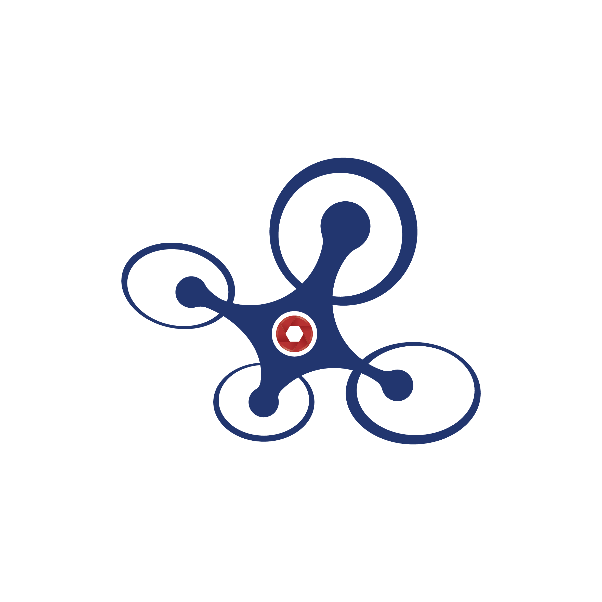
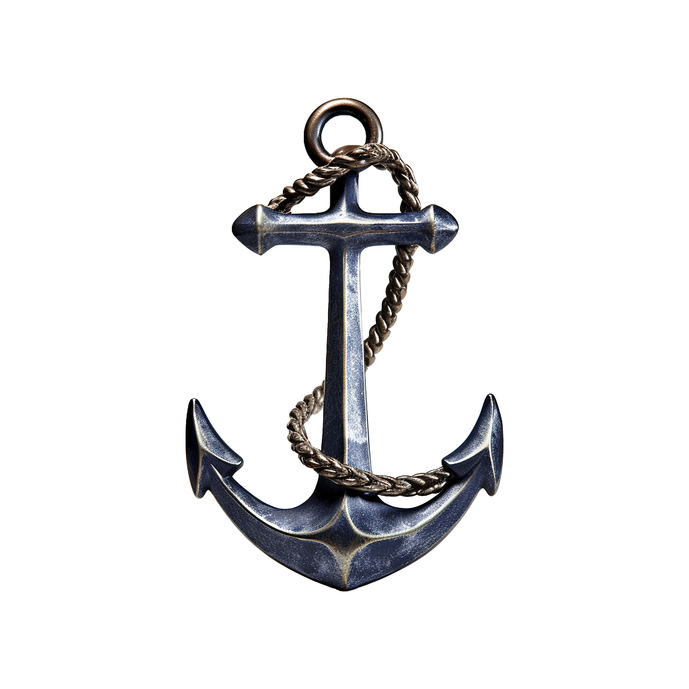

Formé à SIMPLON-MG, 6 mois de formation intensive.
 Passionné depuis l’enfance, œil créatif et curieux.
Chef de quart 500, 8 mois de navigation sur remorqueur en tant que second capitaine.
Exercice responsive : adaptation tous écrans.
Survolez les icônes pour découvrir mes compétences


Je m'appelle Leevan SIGISCAR. Après un bac pro en Maintenance Nautique et une formation de capitaine 200UMS ainsi qu'une formation de chef de quart 500, j’ai navigué 8 mois en tant que second capitaine sur un remorqueur.
Passionné par le monde maritime et les technologies du numérique, j’ai choisi d’unir ces deux univers en devenant développeur web. Mon objectif est de créer une startup numérique dédiée au secteur touristique maritime.
Montage du matériel d’éclairage
Accueil client, vente, réassort
Fabrication de coussins, taud, montage bimini
Entretien moteurs, nettoyage de voiliers, déplacement d’annexes